No. 1
电商/商业海报EC/商業ポスター几何饮品主图海报幾何学的ドリンクメイン画像ポスター
高端商业广告级饮品海报。真实产品摄影 + 平面几何设计 + 超现实风味可视化，品牌模特自动匹配产品调性。黑糖奶茶、山茶纯茶、椰殿果茶……填品牌名即可出图。ハイエンド広告品質のドリンクポスター。リアルな製品写真+平面的な幾何学模様のデザイン+超現実的な味覚の視覚化、ブランドモデルが自動で製品の雰囲気にマッチング。ブランド名を入力するだけ。
Xで元投稿を見る →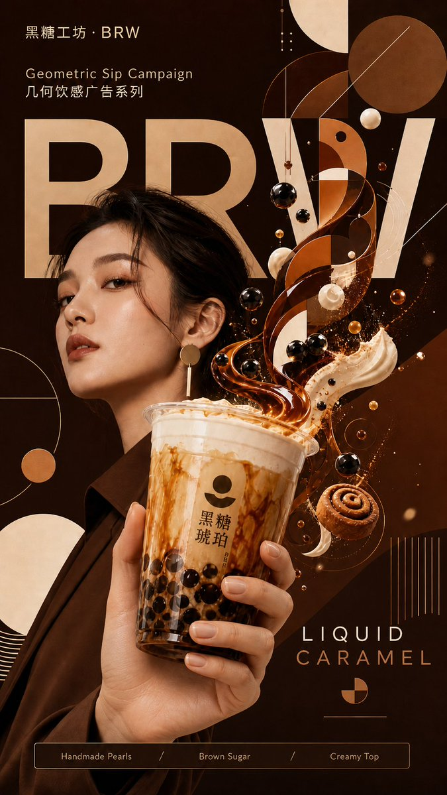
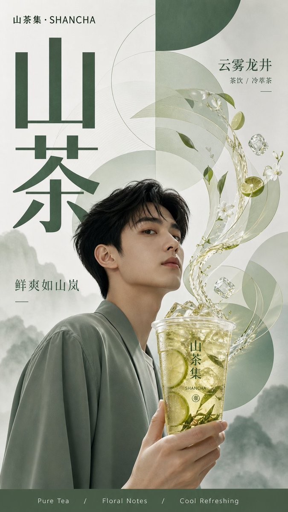
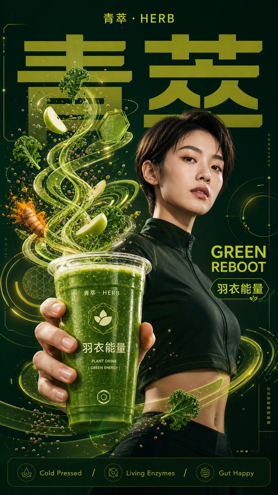
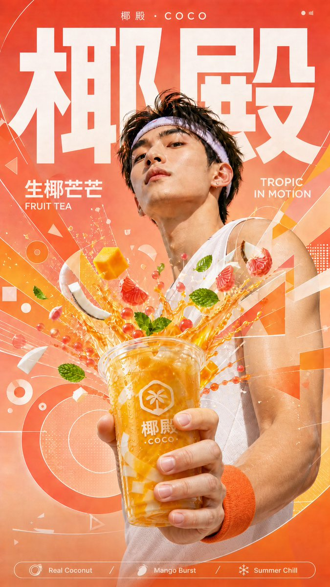
📋 点击展开完整提示词📋 クリックでプロンプトを展開
《几何饮品主图海报》提示词： 请根据以下用户输入，创作一张高完成度的商业饮品海报。 【用户输入】 品牌名：【填写品牌名，可为真实品牌或虚构品牌】 品牌缩写 / 主视觉大字：【填写1-6个字母或汉字，例如 STAR / COSTA / HEYTEA / 椰殿】 产品名：【填写具体饮品名，例如 森林冷萃咖啡 / 热带芒果果茶 / 黑糖珍珠奶茶】 产品类型：【咖啡 / 奶茶 / 果茶 / 气泡饮 / 能量饮料 / 其他】 主色调：【填写品牌主色，例如 深森林绿 / 暖橙粉 / 电光蓝 / 奶油米白 / 深红棕】 辅助色：【填写辅助色，例如 金色细线 / 奶白 / 冰蓝 / 焦糖棕】 食材元素：【填写3-6个核心食材，例如 咖啡豆、肉桂、橙皮、奶泡、冰块】 几何风格：【极简几何 / 包豪斯几何 / 未来感几何 / 东方留白几何 / 活力放射几何】 模特设定：【年轻男性 / 年轻女性 / 都市白领 / 运动青年 / 时尚女孩 / 其他具体人群】 核心口号：【填写一句短口号，例如 TASTE IN MOTION / 风味正在流动】 底部标签：【填写3-4个短标签，例如 Fresh Brewed / Rich Aroma / Crafted Daily / Real Ingredients】 画幅比例：【默认4:5竖版，如需修改可填写3:4、2:3、1:1】 【重要默认规则】 默认必须出现一位符合品牌产品调性的模特。 除非用户明确写出"不出现模特"或"只要产品"，否则画面中必须有模特与饮品互动。 模特不是背景装饰，而是品牌调性的一部分，需要自动匹配产品类型、品牌颜色、饮品气质和广告风格。 如果用户没有填写模特设定，请根据产品类型自动生成合适模特： - 咖啡：都市白领、创意工作者、冷静专业气质 - 奶茶：时尚青年、精致潮流气质 - 果茶：运动青年、阳光活力气质 - 气泡饮：年轻潮流人群、轻快街头气质 - 能量饮料：运动型或未来感青年，力量与速度感 - 纯茶 / 茶饮：清冷、克制、东方高级感人物 - 植物饮 / 健康饮：自然、清爽、自律生活方式气质 【创作目标】 这不是普通饮品海报，也不是简单的产品摄影，而是一张融合「高端商业广告 + 平面几何设计 + 超现实3D饮品表现 + 食材风味可视化 + 品牌调性模特」的品牌视觉海报。 核心视觉概念是： 把饮品的风味、香气、口感、能量和人物气质，翻译成一套有秩序的几何运动系统。 几何图形不是普通背景装饰，而是从饮品液体、蒸汽、食材、人物动作和光影中自然生长出来的视觉语言。 【整体风格】 画面应呈现 premium、modern、bold、clean、commercial、high-end advertising、magazine campaign、cinematic product photography 的质感。 整体视觉要高级、有冲击力、有品牌感，适合社交媒体传播、品牌广告、产品推广和视觉案例展示。 风格应是：flat geometric design fused with hyper-realistic 3D beverage, organic ingredients, and premium lifestyle model photography。 【画面结构】 采用【画幅比例】竖版商业广告构图。 背景使用大面积【主色调】作为品牌色块，可以加入圆角矩形、几何网格、细线、圆形、三角形、六边形、斜切色块或抽象平面结构。 背景要干净、有秩序、有现代感，不要杂乱。 画面中央或中下方为主视觉： 一位【模特设定】手持【产品名】杯子，杯子处于前景视觉中心，具有轻微广角近距离广告镜头感。 模特应与杯子形成明确互动关系：手真实握住杯身或杯盖，手臂从人物身体自然延伸，肩膀、手肘、手腕、手指方向符合真实人体结构。 人物可以正面、微侧身或侧身，但身体朝向、头部朝向、视线方向、手臂方向和杯子位置必须一致，形成可信的商业摄影瞬间。 如果用户明确选择"不出现模特"或"只要产品"，则改为产品杯子单独悬浮或置于中央，以更强的产品广告构图呈现。 杯子必须具有真实商业摄影质感： 清晰杯身、真实材质、自然高光、细腻阴影、立体体积感，产品识别度强。 杯子不能变形，杯口、杯身、杯底透视必须合理。 【人物与手部一致性要求】 这是本海报的关键质量要求。 模特必须是完整、可信、符合物理现实的人物，不要只生成一只孤立的手。 手、手腕、手臂、肩膀和身体必须属于同一个人，并且在空间中自然连接。 手持杯子的动作必须符合真实摄影逻辑：手指自然环绕杯身，拇指位置合理，手腕角度舒适，杯子重心稳定。 人物姿态不要过度扭曲，不要出现反向手臂、错位肩膀、断裂手腕、额外手指、融合手指、畸形手掌、漂浮手、与身体方向不一致的手。 人物视线、头部、躯干和持杯动作要协调，像真实商业广告拍摄出来的瞬间。 【核心视觉效果：饮品转化为几何】 饮品从杯口自然溢出、升腾或爆发，但不是混乱飞溅。 液体、蒸汽、冰块、奶泡、茶汤、咖啡、果汁或气泡，必须被设计成一种受控的几何运动结构。 具体表现为： 1. 饮品液体带有真实光泽、折射、浓稠度和流动感。 2. 液体在空中逐渐转化为干净的几何平面，例如圆形、三角形、六边形、弧线、色块、透明片层。 3. 【食材元素】以真实3D材质悬浮在杯子周围，与几何结构自然融合。 4. 蒸汽、香气或气泡转化为柔和的几何雾层、细线轨迹和微光粒子。 5. 所有元素围绕杯子形成一个清晰的视觉漩涡或放射结构，让画面有动势，但保持高级克制。 6. 几何运动方向需要配合人物动作和杯子方向。 【品牌文字系统】 画面后方加入巨型品牌缩写 / 主视觉大字：【品牌缩写 / 主视觉大字】 字体使用 bold modern sans-serif typography，部分被人物、杯子或几何元素遮挡，形成高级广告层次。 顶部可放置小型品牌名：【品牌名】 底部设置极简标签条：【底部标签】 核心口号【核心口号】可以放在中上方或中下方。 文字排版要求： 简洁、克制、清晰、有品牌感。 不要堆太多小字。不要让文字喧宾夺主。 整体像高端饮品广告 campaign，而不是普通促销海报。 【光影与材质】 使用 cinematic commercial lighting、soft volumetric light、studio product photography、sharp highlights、realistic shadows。 液体、杯子、食材和人物皮肤/服装必须真实细腻；几何部分则保持平面、干净、矢量感。 形成"真实3D产品与人物"与"扁平几何系统"的强烈对比。 【画面气质】 整体要有强烈的广告大片感、设计感和系列化统一感。 视觉重心明确：先看到杯子和饮品几何爆发，再看到模特气质，再看到几何系统、品牌大字和底部标签。 【避免问题】 不要默认无模特。不要生成孤立的手。不要让杯子变形。 不要让几何背景抢走产品主体。不要塑料感、贴纸感、拼贴感。 不要普通奶茶店促销风。不要低端电商海报风。 【最终效果】 一张高完成度、高级、现代、具有强商业广告质感的饮品品牌海报。 默认呈现为：品牌调性模特 + 真实商业饮品产品 + 食材风味可视化 + 有秩序的几何运动系统。
《幾何学ドリンクメインビジュアルポスター》プロンプト： 以下のユーザー入力に基づいて、完成度の高い商業用ドリンクポスターを制作してください。 【ユーザー入力】 ブランド名：【ブランド名を記入、実在・架空どちらでも可】 ブランド略称 / メインビジュアル文字：【1〜6文字のアルファベットまたは漢字、例：STAR / COSTA / HEYTEA / 椰殿】 商品名：【具体的なドリンク名を記入、例：森のコールドブリューコーヒー / トロピカルマンゴーフルーツティー / 黒糖タピオカミルクティー】 商品タイプ：【コーヒー / ミルクティー / フルーツティー / スパークリングドリンク / エナジードリンク / その他】 メインカラー：【ブランドメインカラーを記入、例：深いフォレストグリーン / ウォームオレンジピンク / エレクトリックブルー / クリームホワイト / ダークレッドブラウン】 サブカラー：【サブカラーを記入、例：ゴールド細線 / ミルクホワイト / アイスブルー / キャラメルブラウン】 食材要素：【3〜6つの核心食材を記入、例：コーヒー豆、シナモン、オレンジピール、ミルクフォーム、氷】 幾何学スタイル：【ミニマル幾何学 / バウハウス幾何学 / 未来的幾何学 / 東洋余白幾何学 / ダイナミック放射幾何学】 モデル設定：【若い男性 / 若い女性 / 都市のビジネスパーソン / スポーティな若者 / ファッショナブルな女性 / その他具体的な人物像】 コアコピー：【短いキャッチコピーを記入、例：TASTE IN MOTION / 風味は動き出す】 下部タグラベル：【3〜4つの短いタグを記入、例：Fresh Brewed / Rich Aroma / Crafted Daily / Real Ingredients】 画面比率：【デフォルト4:5縦型、変更する場合は3:4、2:3、1:1を指定】 【重要なデフォルトルール】 デフォルトでは、ブランド・商品の世界観に合ったモデルが必ず登場します。 ユーザーが明示的に「モデルなし」または「商品のみ」と指定しない限り、画面にはモデルとドリンクのインタラクションが必要です。 モデルは背景装飾ではなく、ブランドの世界観の一部として、商品タイプ・ブランドカラー・ドリンクの雰囲気・広告スタイルに自動的にマッチングされます。 モデル設定が未記入の場合、商品タイプに応じて自動生成： - コーヒー：都市のビジネスパーソン、クリエイティブワーカー、冷静でプロフェッショナルな雰囲気 - ミルクティー：ファッショナブルな若者、洗練されたトレンド感 - フルーツティー：スポーティな若者、明るく活力的な雰囲気 - スパークリング：若いトレンド層、軽快でストリート感のある雰囲気 - エナジードリンク：スポーツ選手または未来的な若者、力強さとスピード感 - 純茶・茶飲料：清涼感・抑制の効いた東洋の高級感ある人物 - 植物飲料・ヘルシードリンク：ナチュラル・爽やか・規律あるライフスタイルの人物 【制作目標】 これは普通のドリンクポスターやシンプルな商品写真ではありません。「ハイエンド商業広告 + 平面幾何学デザイン + 超リアル3Dドリンク表現 + 食材の風味可視化 + ブランド世界観モデル」が融合したブランドビジュアルポスターです。 コアとなるビジュアルコンセプト： ドリンクの風味、香り、口当たり、エネルギー、人物の雰囲気を、秩序ある幾何学的な運動システムに翻訳します。 幾何学図形は単なる背景装飾ではなく、飲料の液体・蒸気・食材・人物の動き・光と影から自然に生まれ出る視覚言語です。 【全体スタイル】 premium、modern、bold、clean、commercial、ハイエンド広告、マガジンキャンペーン、シネマティック商品写真の質感。 全体のビジュアルは高級感・インパクト・ブランド感があり、SNS拡散・ブランド広告・商品プロモーション・ビジュアルケーススタディに適しています。 スタイル：flat geometric design fused with hyper-realistic 3D beverage, organic ingredients, and premium lifestyle model photography。 【画面構成】 【画面比率】の縦型商業広告構図を採用。 背景は【メインカラー】を大面积のブランドカラーブロックとして使用し、角丸長方形・幾何学グリッド・細線・円・三角形・六角形・斜めカラーブロック・抽象的な平面構造を追加可能。 背景はクリーンで秩序的、モダンに。散らかさないこと。 画面中央または中下方がメインビジュアル： 【モデル設定】が【商品名】のカップを手に持ち、カップは前景の視覚中心に位置し、わずかな広角・近距離の広告レンズ感。 モデルとカップの明確なインタラクション：手はカップ本体またはフタをリアルに握り、腕は人物の身体から自然に伸び、肩・肘・手首・指の方向は実際の人体構造に沿うこと。 人物は正面・やや横向き・横向きのいずれでも可、身体の向き・頭の向き・視線の方向・腕の方向・カップの位置は一貫し、信頼性のある商業写真の瞬間を形成すること。 ユーザーが明示的に「モデルなし」または「商品のみ」を選択した場合、商品カップ単体を浮遊または中央に配置し、より強い商品広告構図で表現。 カップはリアルな商業写真の質感： クリアなカップ本体、リアルな素材感、自然なハイライト、繊細な影、立体ボリューム感、高い製品認識度。 カップは変形せず、飲み口・本体・底のパースペクティブは合理的であること。 【人物と手の一貫性要件】 これは本ポスターの重要な品質要件です。 モデルは完全で信頼性があり、物理的現実に合致した人物であること。孤立した手だけを生成しないこと。 手・手首・腕・肩・身体は同一人物に属し、空間内で自然に接続されていること。 カップを持つ動作は実際の写真ロジックに合致：指はカップ本体を自然に囲み、親指の位置は合理的、手首の角度は快適、カップの重心は安定。 人物の姿勢は過度にねじれず、逆向きの腕・ずれた肩・折れた手首・余分な指・融合した指・奇形の手のひら・浮遊する手・身体の方向と不一致な手がないこと。 人物の視線・頭部・胴体・カップを持つ動作は調和し、実際の商業広告撮影の瞬間のように。 【コアビジュアル効果：ドリンクの幾何学化】 ドリンクはカップの口から自然に溢れ出し、上昇または爆発するが、無秩序な飛沫ではない。 液体・蒸気・氷・ミルクフォーム・茶湯・コーヒー・ジュース・泡は、制御された幾何学的な運動構造としてデザインされなければならない。 具体的な表現： 1. ドリンクの液体はリアルな光沢・屈折・濃度・流動感を持つ。 2. 液体は空中で徐々にクリーンな幾何学平面に変化（円形・三角形・六角形・弧線・カラーブロック・透明レイヤー）。 3. 【食材要素】はリアルな3Dマテリアルでカップ周囲に浮遊し、幾何学構造と自然に融合。 4. 蒸気・香り・泡は柔らかな幾何学フォグレイヤー・細線軌跡・微光パーティクルに変換。 5. すべての要素がカップを中心に明確な視覚的渦または放射構造を形成し、動勢を持ちながらも高級感のある抑制を保つ。 6. 幾何学運動の方向は人物の動きとカップの方向に合わせる。 【ブランド文字システム】 画面後方に巨大なブランド略称 / メインビジュアル文字：【ブランド略称 / メインビジュアル文字】 書体は bold modern sans-serif typography を使用し、一部は人物・カップ・幾何学要素に遮られ、高級広告のレイヤー感を形成。 上部に小型ブランド名：【ブランド名】 下部にミニマルタグラベルバー：【下部タグラベル】 コアコピー【コアコピー】は中上方または中下方に配置可能。 文字レイアウト要件： シンプル、抑制的、明確、ブランド感がある。 小さな文字を詰め込みすぎないこと。文字が主役を食わないこと。 全体がハイエンドドリンク広告キャンペーンであり、普通のセールポスターではないこと。 【光影と質感】 cinematic commercial lighting、soft volumetric light、studio product photography、sharp highlights、realistic shadows を使用。 液体・カップ・食材・人物の肌/衣服はリアルで繊細に；幾何学部分は平面・クリーン・ベクター感を保つ。 「リアルな3D製品と人物」と「フラットな幾何学システム」の強いコントラストを形成。 【画面の雰囲気】 全体に強い広告ビジュアル感・デザイン感・シリーズ統一感があること。 視覚重心は明確に：最初にカップとドリンクの幾何学的爆発、次にモデルの雰囲気、次に幾何学システム・ブランド大字・下部タグ。 【避けるべき問題】 デフォルトでモデルなしにしないこと。孤立した手を生成しないこと。カップを変形させないこと。 幾何学背景が製品主体を奪わないこと。プラスチック感・ステッカー感・コラージュ感を避けること。 普通のタピオカ店プロモーション風にしないこと。低品質なECポスター風にしないこと。 【最終効果】 完成度が高く、高級で、モダンで、強い商業広告の質感を持つドリンクブランドポスター。 デフォルト表示：ブランド世界観モデル + リアルな商業用ドリンク製品 + 食材風味の可視化 + 秩序ある幾何学運動システム。
No. 2
穿搭/形象/造型穿搭/イメージ/スタイリングAI衣品升级改造报告AI衣品アップグレード改造レポート
上传一张你的照片，AI自动生成Before/After穿搭改造报告。保留面部辨识度，只升级穿搭、气质、比例、层次和配饰。韩系轻潮、Clean Fit、City Boy风格，3套完整Look。あなたの写真をアップロードするだけで、AIがBefore/Afterの穿搭改造レポートを自動生成。顔の特徴を保ったまま、服装・雰囲気・プロポーション・レイヤー・アクセサリーをアップグレード。韓国系カジュアル・クリーンフィット・シティボーイスタイル、3つのルックを提案。
Xで元投稿を見る →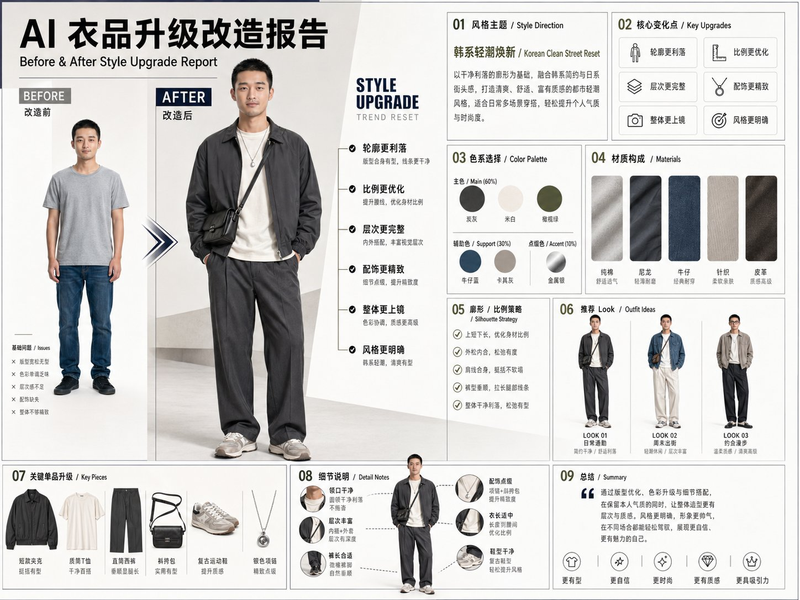
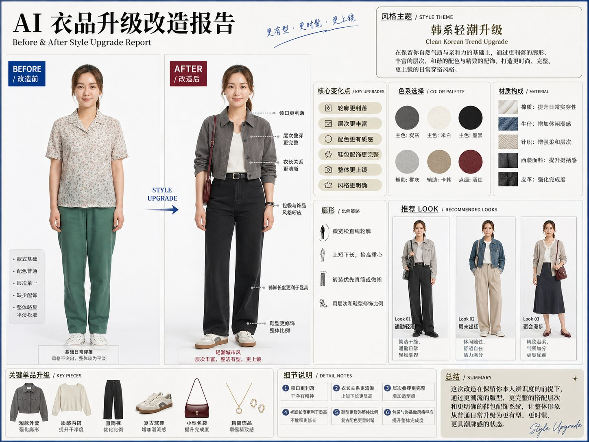
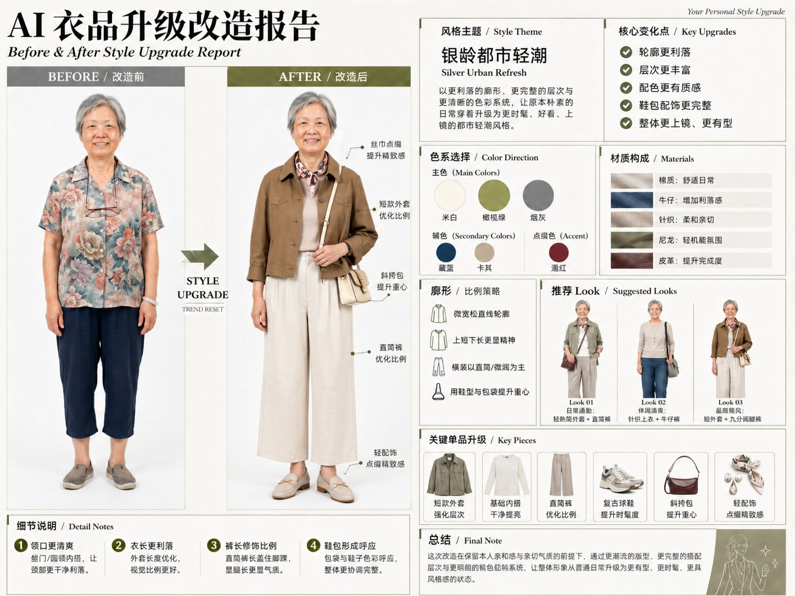
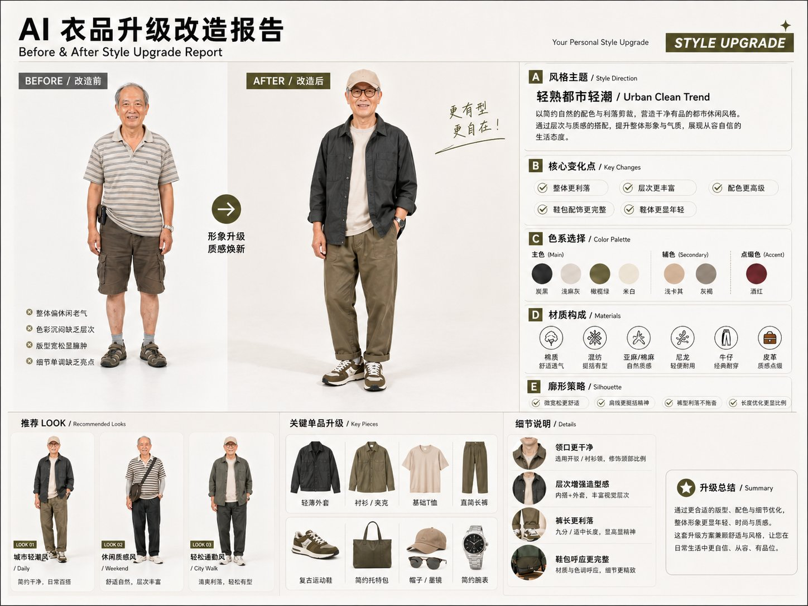
📋 点击展开完整提示词📋 クリックでプロンプトを展開
【AI穿搭-衣品升级改造报告提示词】 请基于用户上传的形象照片，生成一张横向 4:3 的高完成度「AI 衣品升级改造报告 / Before & After Style Upgrade Report」。 如果有参考图像，Image A 是用户上传的本人形象照片，是本次生成的核心人物参考。请保留用户本人的基础身份特征、脸部辨识度、五官特征、年龄感、发型特征、身材比例和整体气质，让人一眼能认出这是同一个人；但在不改变"这个人是谁"的前提下，对整体穿搭、气质、比例、层次、配饰和上镜状态进行明显升级。 本次生成不是普通换装图，不是简单穿搭建议，也不是基础电商搭配图，而是一张「高设计感、高反差、高信息量」的个人潮流形象重塑提案板。 【核心审美方向】 整体风格请明确偏向： 韩系轻潮、Clean Fit、City Boy、Urban Casual、日系简约街头、港风松弛有型、主流潮牌感、清爽高级、日常可穿、上镜好看。 After 的风格应具备以下特征： 1. 轮廓更利落：上身有结构感，肩线更精神，衣长更修饰比例。 2. 比例更优化：通过短外套、内搭层次、裤型和鞋型拉高视觉重心。 3. 层次更完整：外套、内搭、裤装、鞋包、配饰形成完整造型。 4. 配饰更精致：可加入银色项链、手表、戒指、眼镜、斜挎包等。 5. 鞋型更有风格：优先选择复古运动鞋、德训鞋、板鞋、乐福鞋。 6. 整体更上镜：姿态更自然自信，气质更松弛。 【Before / After 主视觉】 整张图的核心必须是 "Before vs After 双人像强对比"。 Before：呈现用户原始形象或接近原始状态的穿着基线。 After：呈现同一个人经过潮流升级后的新形象。 建议使用以下穿搭逻辑： - 短款夹克 / 飞行员夹克 / 工装夹克 / 干净衬衫外套 / 轻机能外套 - 高质感白色或米白色内搭、针织内搭、干净圆领 T 恤 - 直筒裤、微阔裤、垂顺西裤、宽松牛仔裤或卡其裤 - 复古运动鞋、德训鞋、板鞋、乐福鞋 - 小体量斜挎包、银色项链、手表、戒指、眼镜等精致配饰 【版式设计要求】 整体版式要像「潮流杂志内页 + 专业形象顾问提案板」。 - 使用大胆但克制的大标题 - 使用清晰的 Before / After 标签 - 使用箭头、分割线、编号模块、半透明信息卡片 - 背景以白色、浅灰、米白为主，可加入炭黑、橄榄绿、钴蓝等少量强调色 标题建议：「AI 衣品升级改造报告」 副标题：「Before & After Style Upgrade Report」 【内容模块】 1. 风格主题 / Style Direction 2. 核心变化点 / Key Upgrades（5-6个短标签） 3. 色系选择 / Color Palette（主色3+辅助色2+点缀色1） 4. 材质构成 / Materials（4-5种关键材质） 5. 廓形/比例策略 / Silhouette Strategy（3-5条关键策略） 6. 推荐 Look / Outfit Ideas（3套完整穿搭：日常通勤/周末出街/约会漫步） 7. 关键单品升级 / Key Pieces（5-6个带来改造感的单品） 8. 细节说明 / Detail Notes 9. 总结 / Summary 【视觉质量要求】 - 横向 4:3，高完成度，高级潮流杂志感，专业提案板感 - After 更帅、更潮、更上镜 【严格避免】 - After 古板、老气、商务化、成熟过头 - 像保险销售、办公室通勤、老干部穿搭 - 像 Excel 表格、PPT 模板、电商拼图 - Before 和 After 不像同一个人
【AI着こなし-スタイルアップグレードレポートプロンプト】 ユーザーがアップロードした人物写真に基づき、横向き4:3の高完成度「AIスタイルアップグレードレポート / Before & After Style Upgrade Report」を生成してください。 参照画像がある場合、Image Aはユーザーがアップロードした本人の人物写真であり、今回生成の中核となる人物参照です。ユーザー本人の基礎的なアイデンティティ特徴、顔の識別性、五官の特徴、年齢感、髪型の特徴、体型比率、全体の雰囲気を保持し、一目で同一人物と認識できるようにしてください。ただし「誰であるか」を変えずに、全体の着こなし、雰囲気、プロポーション、レイヤリング、アクセサリー、フォトジェニックな状態を明確にアップグレードしてください。 これは普通の着せ替え画像やシンプルな着こなし提案、基本的なECコーディネート画像ではなく、「高デザイン性・高コントラスト・高情報量」の個人トレンドイメージ再構築提案ボードです。 【コアな審美方向性】 全体スタイルは明確に以下を目指してください： 韓国系ライトトレンド、Clean Fit、City Boy、Urban Casual、日本系ミニマルストリート、香港系リラックススタイリッシュ、メインストリームストリートブランド感、爽やか高級感、日常着用可、写真映え。 Afterのスタイルは以下の特徴を備えること： 1. シルエットがよりシャープに：上半身に構造感、ショルダーラインがより引き締まり、着丈がプロポーションをより補正。 2. プロポーションがより最適化：ショートアウター、インナーのレイヤリング、パンツの形と靴の形で視覚重心を引き上げ。 3. レイヤリングがより完全に：アウター、インナー、パンツ、靴とバッグ、アクセサリーで完全なスタイリングを形成。 4. アクセサリーがより洗練：シルバーネックレス、時計、リング、メガネ、クロスボディバッグなどを追加可能。 5. 靴のスタイルがより特徴的：レトロスニーカー、ドイツ軍トレーナー、スケートシューズ、ローファーを優先。 6. 全体がよりフォトジェニック：姿勢がより自然で自信に満ち、雰囲気がよりリラックス。 【Before / After メインビジュアル】 図全体のコアは「Before vs After の二人像強对比」でなければならない。 Before：ユーザーの元のイメージまたは元の状態に近い着用ベースラインを提示。 After：同一人物がトレンドアップグレードされた後の新しいイメージを提示。 以下の着こなしロジックを推奨： - ショートブルゾン / フライトジャケット / ワークジャケット / クリーンなシャツアウター / ライトテックアウター - 高質感ホワイトまたはオフホワイトのインナー、ニットインナー、クリーンなクルーネックTシャツ - ストレートパンツ、ややワイドパンツ、ドレープスラックス、ルーズジーンズまたはチノパン - レトロスニーカー、ドイツ軍トレーナー、スケートシューズ、ローファー - 小ぶりなクロスボディバッグ、シルバーネックレス、時計、リング、メガネなど洗練されたアクセサリー 【レイアウトデザイン要件】 全体のレイアウトは「トレンド雑誌の中ページ + プロフェッショナルイメージコンサルタントの提案ボード」のように。 - 大胆だが抑制の効いた大見出しを使用 - 明確な Before / After ラベルを使用 - 矢印、区切り線、番号付きモジュール、半透明情報カードを使用 - 背景はホワイト、ライトグレー、オフホワイトをベースに、チャコールブラック、オリーブグリーン、コバルトブルーなどの少量のアクセントカラーを追加可能 推奨タイトル：「AIスタイルアップグレードレポート」 サブタイトル：「Before & After Style Upgrade Report」 【コンテンツモジュール】 1. スタイルテーマ / Style Direction 2. コアな変化点 / Key Upgrades（5〜6個の短いタグ） 3. カラー選択 / Color Palette（メインカラー3+サブカラー2+アクセントカラー1） 4. 素材構成 / Materials（4〜5種類のキー素材） 5. シルエット/プロポーション戦略 / Silhouette Strategy（3〜5のキー戦略） 6. おすすめLook / Outfit Ideas（3セットの完全コーデ：日常通勤/週末お出かけ/デート散歩） 7. キーアイテムアップグレード / Key Pieces（5〜6の変化をもたらすアイテム） 8. 詳細説明 / Detail Notes 9. まとめ / Summary 【ビジュアル品質要件】 - 横向き4:3、高完成度、高級トレンド雑誌感、プロフェッショナル提案ボード感 - Afterはより格好良く、よりトレンディに、よりフォトジェニックに 【厳格に避けること】 - Afterが古臭い、老けて見える、ビジネス化、成熟しすぎ - 保険営業、オフィス通勤、古いタイプの着こなし風 - Excel表、PPTテンプレート、ECコラージュ風 - BeforeとAfterが同一人物に見えない
No. 3
教育/科普/图解教育/科学/イラスト剖面科普图解绘本断面科普図解絵本
输入任意主题（火山、心脏、潜水艇、霸王龙……），自动生成出版级科普图解页。外部形态+内部结构+功能分区+知识标注，孩子一看就入迷。テーマ（火山・心臓・潜水艦・ティラノサウルス…）を入力するだけで、出版品質の科学図解ページを自動生成。外部形態+内部構造+機能区分+知識ラベル、子供が夢中になる絵本品質。
Xで元投稿を見る →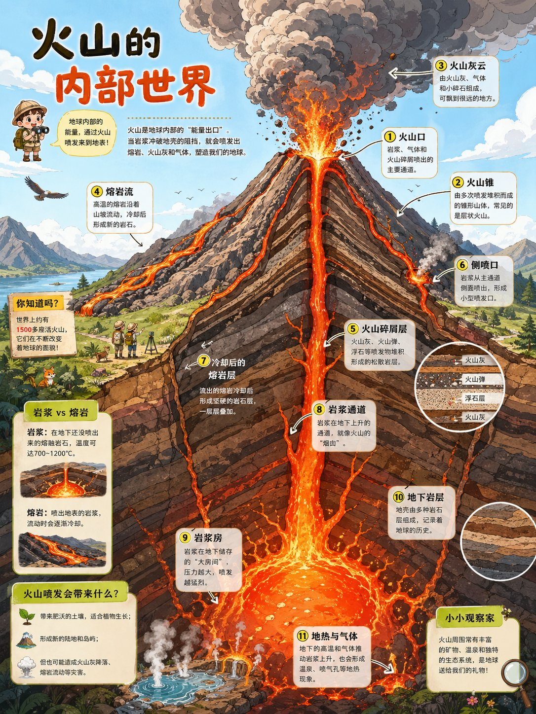
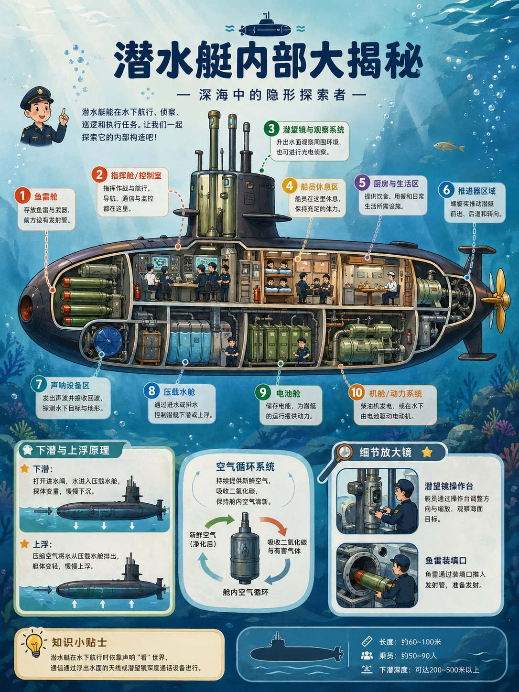
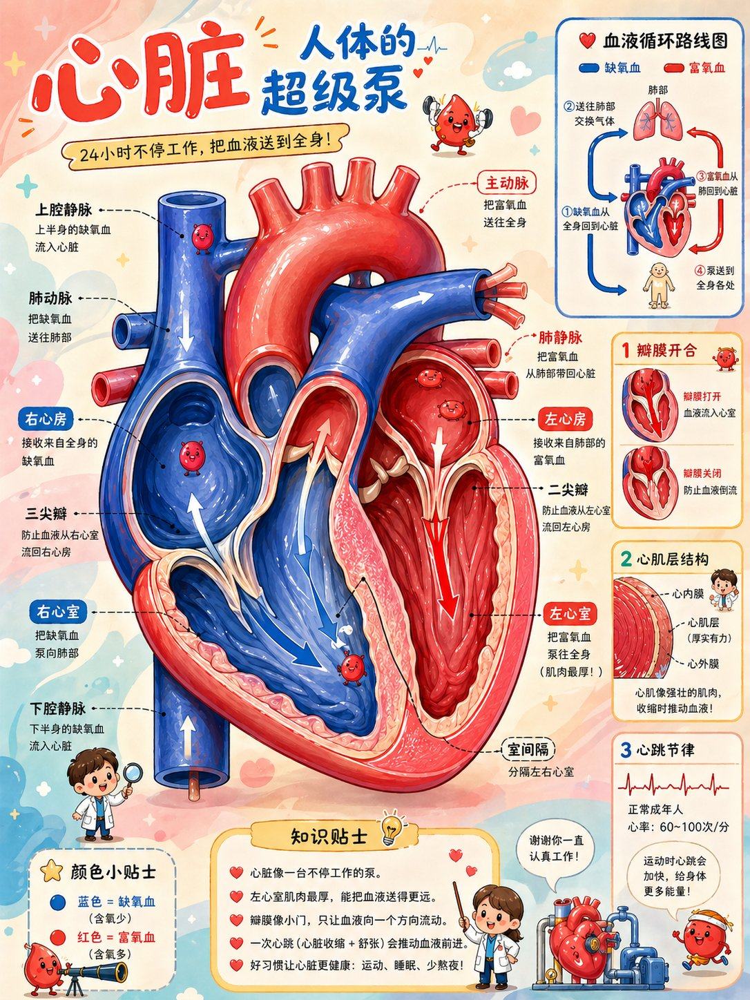
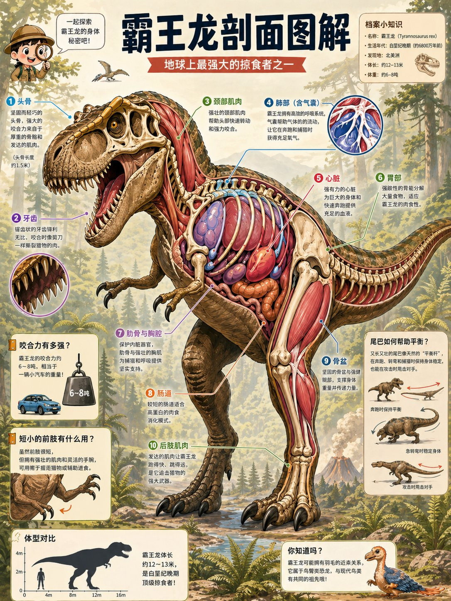
📋 点击展开完整提示词📋 クリックでプロンプトを展開
《剖面科普图解绘本》提示词： 请根据【主题】创作一张高完成度、适合系列化发布的「剖面科普图解绘本 / Cutaway Educational Picture Book」风格插画。 这不是普通插画，也不是单纯的写实结构图，而是一张结合"剖面展示 + 内部结构说明 + 功能分区图解 + 绘本质感 + 信息标注系统"的知识型视觉图。画面应让观者能够同时看见对象的外部形态、内部结构、层级关系、功能逻辑与关键知识点。 【输入主题】 主题：【在这里填写主题，例如心脏 / 向日葵 / 巨龙 / 图书馆 / 火山 / 鲸鱼 / 城堡 / 潜水艇 / 魔法树】 【自动理解规则】 请不要机械照搬单一套路，而是根据【主题】自动判断最适合的图像表达方式： 1. 自动判断主题更接近哪一类对象（人体/动物/植物/建筑/机械/交通工具/自然地理/幻想设定等）。 2. 自动判断最适合展示的内容重点（内部结构/功能分区/运作原理/生长过程/生态关系/层级系统/空间组织/能量流动）。 3. 自动判断最适合的受众理解层级，整体偏向"儿童可读 + 大众科普可看懂"。 4. 如果主题本身不适合严格"解剖式剖面"，也可采用"局部切开/半透明展示/分层展开/截面说明/内部空间揭示"等方式。 【画幅与构图】 画幅比例固定为：3:4 竖版。 画面主体应集中在画面中央，通过纵向延展、上下分层、主剖面居中、说明信息围绕主体分布的方式呈现。 【画面内容要求】 1. 主题对象一眼可识别，外部轮廓清楚。 2. 内部结构、内部空间或分层关系清晰可读。 3. 重点区域应有明确功能含义或知识解释价值。 4. 可加入适量的小人物、小动物、小角色或微型互动场景，增强趣味性。 5. 可加入箭头、编号、中文小标题、说明框、局部放大框、知识贴士等。 6. 信息量丰富，但不能杂乱。 【视觉风格】 - 清晰自然的手绘线条 - 略带绘本感的轮廓与造型 - 明亮、温和、干净的配色 - 结构清楚但不过度工程化 - 细节丰富但不堆砌 - 画面有探索感、阅读感、观察乐趣 - 风格介于"儿童绘本插画"和"图解说明图"之间 【材质与质感要求】 保留绘本插画气质，但不要加入明显纸张材质效果。 不要出现：纸张纹理、纸质压痕、印刷噪点、复古做旧肌理、书页折痕、泛黄纸感。 整体画面应更像"现代儿童科普绘本插画成稿"。 【版式与文字】 文字标注不需要过多，使用中文短标签或简短说明词组。 标注系统应服务于理解，不要堆满整页。 【色彩建议】 - 明亮、柔和、易读 - 主题突出，背景干净 - 层次清晰，不脏不灰 - 适合儿童认知和大众科普阅读 【禁止倾向】 不要做成：纯医学教科书式写实图谱、冰冷工业蓝图、低幼幼儿简笔画、赛博朋克式光污染、带有明显纸质扫描感的旧书风效果。 【最终目标】 让整张图看起来像一本高质量现代科普绘本中的精彩竖版图解页。它既有知识性，也有美感；既有结构说明感，也有趣味阅读感；既适合儿童看，也能让成年人觉得高级、清晰、好看。
《断面科普図解絵本》プロンプト： 【テーマ】に基づいて、高完成度でシリーズ化に適した「断面科普図解絵本 / Cutaway Educational Picture Book」スタイルのイラストを制作してください。 これは普通のイラストでも、単なる写実的な構造図でもなく、「断面展示 + 内部構造説明 + 機能区分図解 + 絵本の質感 + 情報ラベリングシステム」を組み合わせた知識型ビジュアル図です。画面は閲覧者が対象の外部形態・内部構造・階層関係・機能ロジック・キーポイントを同時に見られるようにします。 【入力テーマ】 テーマ：【ここにテーマを記入、例：心臓 / ひまわり / ドラゴン / 図書館 / 火山 / クジラ / 城 / 潜水艦 / 魔法の木】 【自動理解ルール】 単一のパターンを機械的に適用せず、【テーマ】に基づいて最適な画像表現方法を自動判断してください： 1. テーマがどの種類の対象に近いか自動判断（人体/動物/植物/建築/機械/乗り物/自然地理/ファンタジー設定など）。 2. 最も展示に適したコンテンツ重点を自動判断（内部構造/機能区分/動作原理/成長過程/生態関係/階層システム/空間組織/エネルギーフロー）。 3. 最適な読者理解レベルを自動判断、全体的に「子供が読める + 一般科普として理解できる」方向。 4. テーマ自体が厳密な「解剖式断面」に適さない場合、「部分切開/半透明展示/階層展開/断面説明/内部空間公開」などの方法も可。 【画面比率と構図】 画面比率は固定：3:4縦型。 画面主体は画面中央に集中し、縦方向の展開・上下階層・メイン断面を中央に・説明情報が主体を囲む形で配置。 【画面内容要件】 1. テーマ対象が一目で識別可能、外部輪郭が明確。 2. 内部構造・内部空間・階層関係が明確に読み取れる。 3. 重点エリアには明確な機能意味・知識説明価値があること。 4. 適量の小人・小動物・小さなキャラクター・ミニチュアインタラクションシーンを追加し、楽しさを強化可能。 5. 矢印・番号・小さな見出し・説明ボックス・部分拡大ボックス・知識Tipsなどを追加可能。 6. 情報量は豊富だが、散らかってはいけない。 【ビジュアルスタイル】 - 明確で自然な手描き線 - やや絵本感のある輪郭と造形 - 明るく、穏やかで、クリーンな配色 - 構造は明確だが過度にエンジニアリング化しない - ディテールは豊富だが詰め込みすぎない - 画面に探索感・読書感・観察の楽しさがある - スタイルは「児童絵本イラスト」と「図解説明図」の中間 【質感要件】 絵本イラストの雰囲気を保つが、明らかな紙質効果を加えないこと。 以下の要素を入れないこと：紙テクスチャ、紙の押し跡、印刷ノイズ、レトロなエイジング加工、ページの折り目、黄ばんだ紙感。 全体の画面は「現代児童科普絵本イラスト完成稿」のように。 【レイアウトと文字】 文字ラベルは多すぎず、短い日本語ラベルまたは簡潔な説明フレーズを使用。 ラベリングシステムは理解を助けるためにあり、ページを埋め尽くさないこと。 【色彩提案】 - 明るく、柔らかく、読みやすい - テーマが際立ち、背景はクリーン - 階層が明確で、濁らず灰色にならない - 児童の認知と一般科普の読書に適する 【禁止傾向】 以下のようにしないこと：純粋な医学教科書式写実図譜、冷たい工業設計図、幼児向け簡略線画、サイバーパンク的光汚染、明らかな紙スキャン感のある古書風効果。 【最終目標】 全体の図が高品質な現代科普絵本の素晴らしい縦型図解ページに見えること。知識性と美しさを兼ね備え、構造説明感と楽しい読書感を両立し、子供が見ても、大人が高級・明確・美しいと感じるものに。
No. 4
电商/商业海报EC/商業ポスター毛绒微缩世界海报ぬいぐるみミニチュアワールドポスター
为品牌创建治愈系毛绒微缩世界。填入品牌名+场景主题，AI自动生成毛绒角色、梦幻场景和高质感摄影海报。Nike、IKEA、MUJI……同一套提示词适配任何品牌。ブランドのための癒し系ぬいぐるみミニチュアワールド。ブランド名+シーンテーマを入力すると、AIがぬいぐるみキャラクター・夢のようなシーン・高品質な写真ポスターを自動生成。Nike・IKEA・MUJI…同じプロンプトでどんなブランドにも対応。
Xで元投稿を見る →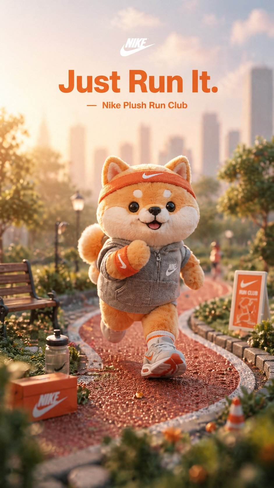
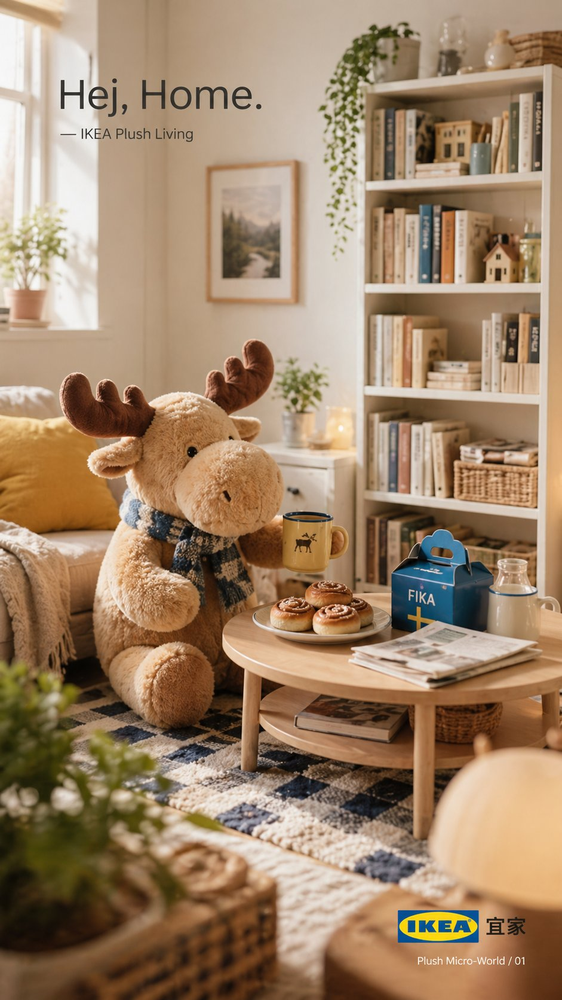
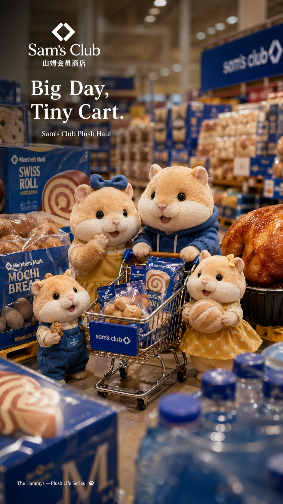
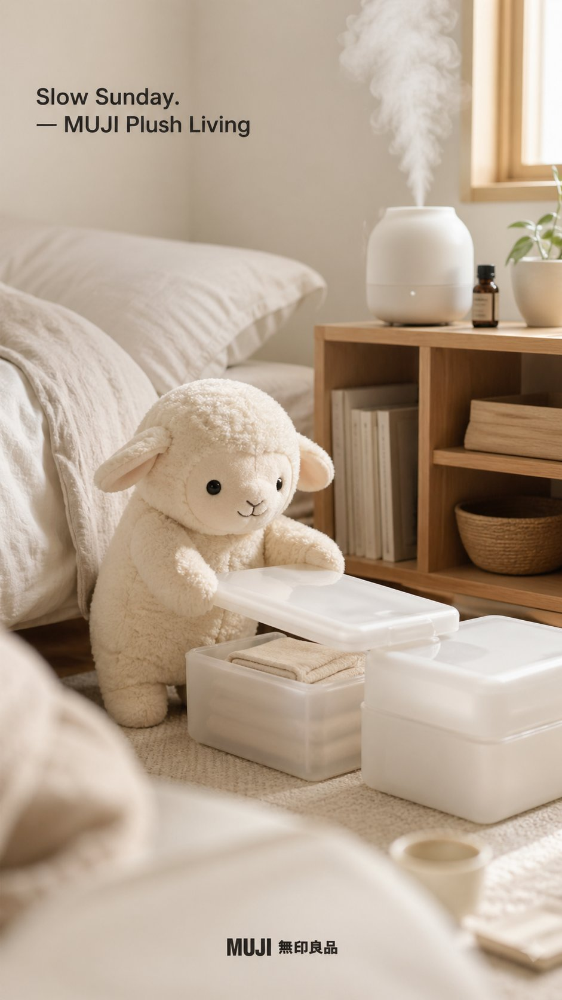
📋 点击展开完整提示词📋 クリックでプロンプトを展開
《毛绒微缩世界海报》提示词： 请根据用户输入的信息，创作一张高完成度的「毛绒微缩世界摄影海报 / Plush Micro-World Photography Poster」。 用户输入： 品牌名： 场景主题： 角色名（可选）： 标题文字（可选）： 情绪氛围（可选）： 如果用户填写了【角色名】，请围绕该角色进行毛绒化设计与场景呈现；如果用户没有填写【角色名】，请根据【品牌名】、【场景主题】和整体氛围，自动生成一个最适合该品牌与场景的毛绒角色。角色可以是动物型、幻想生物型、品牌吉祥物型、软萌小精灵型或其他更适合主题的形象。 本次画面不是普通玩具摆拍，不是儿童插画，也不是信息密集型广告海报，而是一张融合「高质感毛绒玩具摄影 + 梦幻微缩场景 + 克制品牌文字平面系统」的竖版手机海报。整体应像真实摄影棚中拍摄出来的毛绒微缩世界，有真实镜头感、浅景深、自然光影、前后景层次、细腻材质和品牌大片感。 画面主体是一位或一组毛绒角色，角色需要圆润、柔软、可爱但不幼稚，具有明显的毛绒、羊毛毡、绒面布料或软体玩具质感。角色表情要简洁、有情绪、有记忆点，使角色像正在生活在这个小世界里。角色应与【场景主题】发生自然互动（休息/散步/阅读/玩耍/收信/喝咖啡/旅行/等待/庆祝/发呆/工作/陪伴/探索）。 请围绕【场景主题】搭建一个梦幻、精致、生活化的微缩场景。场景可以像微型庭院、童话房间、品牌橱窗、柔软山丘、游乐场、阳台、花园、街角、咖啡馆、书房、卧室、展台、快闪空间、节日装置或其他适合主题的小世界。 画面构图采用竖版 iPhone 海报比例。使用摄影式构图，需要有明确的前景、中景和背景： - 前景：轻微虚化的道具、花朵、云朵、玩具、布料边缘 - 中景：毛绒角色和主要互动区域 - 背景：柔和的天空、房屋、窗户、庭院、室内空间、品牌装置或梦幻景深 光线要真实、柔和、有空气感。画面应具有真实摄影质感：浅景深、柔和虚化、细腻绒毛高光、自然阴影、微距摄影感、干净明亮的色彩层次。 色彩风格应根据品牌名与场景主题自动判断。整体可以使用高明度、干净、柔和、治愈的色彩体系（天空蓝、奶油黄、樱花粉、浅紫、草地绿、暖橙、木色、白色等），但必须保持画面清爽、高级、有商业摄影感。 文字平面系统需要克制、干净、有品牌感。文字面积建议控制在画面的 5%–12% 以内。若用户填写了【标题文字】，则优先使用该标题；若未填写，则自动生成简洁、有设计感的英文或中英混排标题。 整体视觉应呈现为一个高级、柔软、梦幻、真实摄影感的毛绒微缩世界。 禁止：低质感玩具摆拍、廉价儿童插画、过度卡通化、恐怖表情、脏乱背景、文字过多、信息图式箭头标注、杂乱贴纸堆叠、过度商业促销感、过度塑料质感、角色与场景不匹配、没有摄影景深、没有毛绒材质。
《ぬいぐるみミニチュアワールドポスター》プロンプト： ユーザーが入力した情報に基づいて、高完成度の「ぬいぐるみミニチュアワールド写真ポスター / Plush Micro-World Photography Poster」を制作してください。 ユーザー入力： ブランド名： シーンテーマ： キャラクター名（オプション）： タイトル文字（オプション）： 感情・雰囲気（オプション）： ユーザーが【キャラクター名】を入力した場合、そのキャラクターをぬいぐるみ化してシーンに登場させてください。入力がない場合は、【ブランド名】・【シーンテーマ】・全体の雰囲気に基づいて、ブランドとシーンに最もマッチするぬいぐるみキャラクターを自動生成してください。キャラクターは動物型・ファンタジー生物型・ブランドマスコット型・柔らかくかわいいスプライト型など、テーマに最適な形態にします。 今回のビジュアルは、普通の玩具の並べ写真でも、児童イラストでも、情報過多な広告ポスターでもありません。「高質感ぬいぐるみ玩具写真 + 夢のようなミニチュアシーン + 抑制の効いたブランド文字平面システム」が融合した縦型スマホポスターです。全体は実際の写真スタジオで撮影されたぬいぐるみミニチュアワールドのように、リアルなレンズ感・浅い被写界深度・自然な光影・前景と後景の階層・繊細な素材感・ブランドのビジュアル感があります。 画面の主体は1体または1グループのぬいぐるみキャラクターです。キャラクターは丸みがあり、柔らかく、かわいいが幼稚すぎず、明らかなぬいぐるみ・羊毛フェルト・フランネル布地・ソフトトイの質感を持ちます。表情はシンプルで、感情があり、記憶に残るものに。キャラクターがこの小さな世界で生活しているように見えること。【シーンテーマ】と自然なインタラクションを行います（休息・散歩・読書・遊び・手紙受け取り・コーヒー・旅行・待つ・お祝い・ぼんやり・仕事・寄り添い・探検）。 【シーンテーマ】を中心に、夢のように精巧で生活感のあるミニチュアシーンを構築してください。シーンはミニチュアな中庭、童話の部屋、ブランドのショーウィンドウ、柔らかな丘、遊園地、バルコニー、庭園、街角、カフェ、書斎、寝室、展示台、ポップアップスペース、フェスティバル装置など、テーマに合った小さな世界にできます。 画面構図は縦型iPhoneポスター比率を採用。写真式構図を使用し、明確な前景・中景・背景が必要です： - 前景：軽くぼかした小道具、花、雲、玩具、布の端 - 中景：ぬいぐるみキャラクターとメインのインタラクションエリア - 背景：柔らかな空、家、窓、中庭、室内空間、ブランド装置または夢のような被写界深度 光はリアルで柔らかく、空気感があります。画面はリアルな写真の質感：浅い被写界深度、柔らかなボケ、繊細な毛羽のハイライト、自然な影、マクロ撮影感、クリーンで明るい色彩階層。 色彩スタイルはブランド名とシーンテーマに応じて自動判断。全体は高明度・クリーン・柔らか・癒し系の色彩体系（スカイブルー、クリームイエロー、桜ピンク、淡い紫、草原グリーン、ウォームオレンジ、ウッドカラー、ホワイトなど）を使用できますが、画面は爽やかで高級感があり、商業写真感を保つ必要があります。 文字平面システムは抑制が効き、クリーンで、ブランド感があること。文字面積は画面の5%〜12%以内に抑えることを推奨。ユーザーが【タイトル文字】を入力した場合はそれを優先使用。未入力の場合は、シンプルでデザイン性のある英語または日中混合のタイトルを自動生成。 全体のビジュアルは、高級で、柔らかく、夢のように、リアルな写真感のあるぬいぐるみミニチュアワールドとして表現されること。 禁止：低品質な玩具の並べ写真、安っぽい児童イラスト、過度なカートゥーン化、怖い表情、汚い背景、文字过多、インフォグラフィック式の矢印注釈、雑然としたステッカーの重ね貼り、過度な商業プロモーション感、過度なプラスチック質感、キャラクターとシーンの不一致、写真の被写界深度がない、ぬいぐるみ素材感がない。
No. 5
视频制作/Seedance動画制作/Seedance世界杯看台抓拍视频W杯スタンドキャプチャー動画
完整3步工作流：① GPT-Image2生成6宫格分镜故事板 → ② 喂给Seedance生成视频 → ③ 后期调色。从体育场全景→看台特写→大屏时刻→女主反应→全场欢呼，直播感拉满。完全3ステップワークフロー：① GPT-Image2で6コマ絵コンテ作成 → ② Seedanceに渡して動画生成 → ③ 後処理で調整。スタジアム全景→スタンドのクローズアップ→大型スクリーンの瞬間→ヒロインの反応→満員の喝采、ライブ感満載。
Xで元投稿を見る →
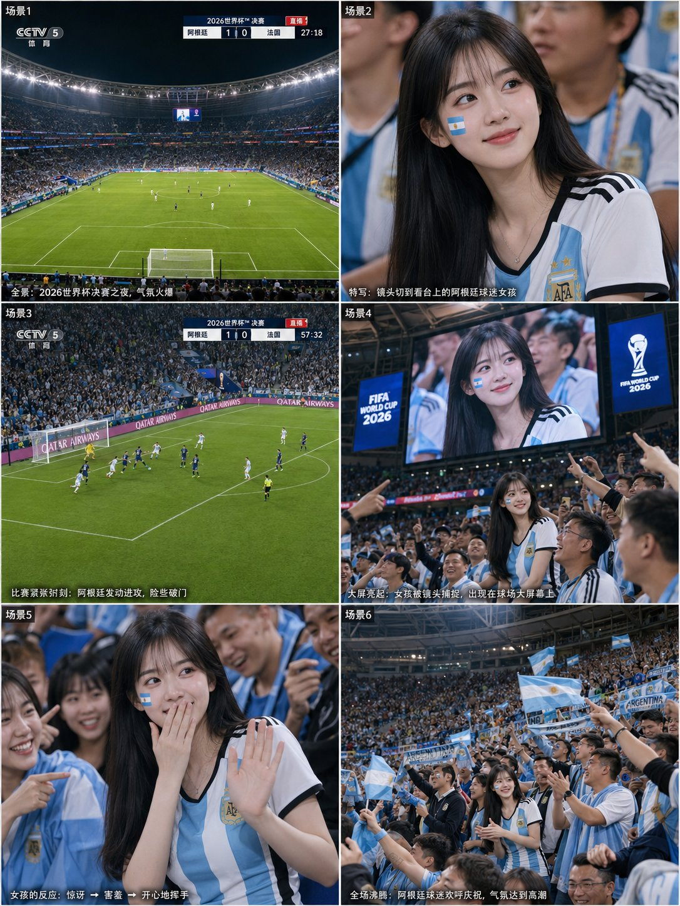
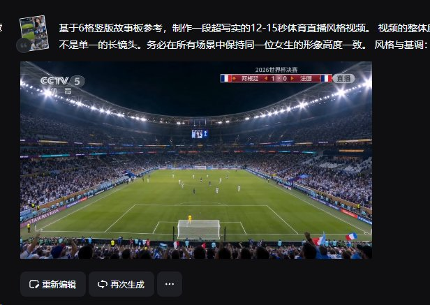
📋 点击展开完整提示词（3步工作流）📋 クリックでプロンプトを展開（3ステップ）
【Step 1】创作分镜故事板 先在 ChatGPT 里把这个故事板搭出来，用的是 6 宫格。 参考提示词： 请生成一张高完成度的「2026世界杯女球迷出圈故事板 / 6宫格竖版分镜图」。 【画布要求】 - 竖版构图 - 6宫格排版，2列 × 3行 - 每一格都是一个独立镜头，整体要有统一的体育直播分镜感 【整体设定】 主题是：2026年世界杯比赛现场，一位支持阿根廷的中国年轻女球迷，在看台上被转播镜头拍到，随后出现在球场大屏幕上，引发现场观众关注和欢呼。 【女主设定】 女主是一位年轻中国女生，长相要偏青春清纯、初恋感、女友感。 她不是浓妆网红脸，也不是艳丽性感挂，而是： - 东亚面孔 - 五官好看、秀气、耐看 - 眼神清亮，气质温柔 - 长发自然披肩 - 淡妆或近乎裸妆 - 穿女生版、略修身的阿根廷球衣 【分镜内容】 场景1——体育场全景 夜幕下的2026世界杯赛场，巨大的现代化体育场灯火通明。镜头从高处俯拍，观众席座无虚席。加入中文体育转播UI、比赛信息、时间条、直播标识。 场景2——看台女球迷特写 镜头切到看台，一位年轻中国女球迷出现在画面中。她支持阿根廷，穿着女生版阿根廷球衣，长发披肩，淡妆，清纯好看，神态自然，轻轻看向球场方向。 场景3——比赛紧张画面 球门附近出现一次紧张的进攻场面，阿根廷队制造威胁，比赛气氛拉满。 场景4——大屏时刻 球场巨大的电子屏幕突然亮起，屏幕上显示的正是刚才这位中国女球迷的特写。画面要同时看到：大屏幕上的她，以及现实看台中的她本人。周围球迷开始注意到她，指向大屏、露出笑容、起哄、欢呼。 场景5——她的反应 特写镜头拍她意识到自己出现在大屏上的瞬间。她先有一点惊讶，然后露出害羞又甜甜的笑容，可以轻轻捂嘴，再小幅度挥手。表情变化要自然：惊讶 → 害羞 → 甜甜地笑。 场景6——全场氛围收尾 镜头拉远，展示整片看台的欢呼氛围。大量阿根廷球迷挥舞旗帜、围巾和双手。女主也在其中，带着开心的笑容融入全场庆祝。 【画面细节要求】 - 每一格都有中文场景标题（场景1/场景2/场景3…） - 画面中可带适度的中文体育转播UI - 整体色调以体育场真实灯光为主，蓝白色阿根廷元素贯穿 - 所有镜头都要强调"真实转播感" - 女主在所有格子中的身份和长相必须保持一致 --- 【Step 2】生成视频 把这张 6 宫格故事板丢进 Seedance 去生成视频。 参考提示词： 请基于这张6宫格竖版故事板，生成一段高真实感、强临场感的短视频。 【视频目标】 视频要像一段"2026世界杯中文体育直播中的真实片段"，而不是广告短片。整体时长约12～15秒，节奏自然流畅，使用分镜切换，而不是一镜到底。 【整体风格】 - 超真实体育直播风格 - 2026世界杯现场氛围 - 镜头语言要像电视转播镜头 - 保留适度的运动模糊、现场噪点、直播压缩感、真实灯光变化 【分镜顺序】 场景1：体育场全景镜头，夜幕下灯火通明，观众席爆满。镜头从高处缓慢扫过球场与看台。 场景2：镜头切到看台上的中国女球迷特写。她安静地坐在热情的球迷之间，神态自然放松。 场景3：切到比赛紧张时刻。阿根廷队在禁区附近制造进攻，球员快速跑动。 场景4：切到球场大屏幕。大屏幕亮起，画面中出现这位中国女球迷的特写。周围球迷指向大屏、笑、起哄、欢呼。 场景5：给她一个近景反应镜头。她先愣一下，然后发现真的是自己上屏了，露出害羞又开心的笑容。表情变化：惊讶 → 害羞 → 甜甜地笑。 场景6：最后镜头拉远，展示整片看台的热烈氛围。阿根廷球迷挥舞围巾和旗帜，全场欢呼。女主融入其中。 【画质要求】 - 高真实感 - 真实肤质 - 真实人群运动 - 真实球场光影 - 轻微直播压缩感 - 真实体育频道转播质感 --- 【Step 3】后期处理（可选） 参考体育转播画面去调整：饱和度、亮度、清晰度、对比度、轻微噪点、压缩感。 让画面第一眼感觉和电视信号转播画质一致。 如果对你有启发，请关注@MrLarus，我会持续分享实践案例！
【Step 1】絵コンテストーリーボードの作成 まずChatGPTでこのストーリーボードを組み立てます。6コマを使用します。 参考プロンプト： 高完成度の「2026W杯女子サポーター話題騒然ストーリーボード / 6コマ縦型絵コンテ図」を生成してください。 【キャンバス要件】 - 縦型構図 - 6コマレイアウト、2列×3行 - 各コマは独立したショット、全体に統一されたスポーツ中継絵コンテ感 【全体設定】 テーマ：2026年W杯試合会場、アルゼンチンを応援する中国人の若い女性サポーターが、スタンドで中継カメラに捉えられ、その後スタジアムの大型スクリーンに映し出され、観客の注目と喝采を浴びる。 【ヒロイン設定】 ヒロインは若い中国人女性。顔立ちは青春感・清純感・初恋感・彼女感のある方向性。 濃いメイクのインフルエンサー顔でも、艶やかなセクシー系でもなく： - 東アジアの顔立ち - 整った、品のある、見飽きない顔 - 澄んだ瞳、優しい雰囲気 - ロングヘアを自然に下ろす - 薄化粧またはほぼノーメイク - 女性版・ややフィットしたアルゼンチンのユニフォーム着用 【コマ割り内容】 シーン1——スタジアム全景 夜空の下の2026W杯会場、巨大なモダンスタジアムがライトアップ。高所からの俯瞰ショット、観客席は満席。中国語のスポーツ中継UI、試合情報、タイムバー、ライブ標識を追加。 シーン2——スタンドの女性サポタークローズアップ カメラがスタンドに切り替わり、若い中国人女性サポーターが画面に登場。アルゼンチンサポーター、女性版アルゼンチンユニフォーム着用、ロングヘア、薄化粧、清純で美しい、自然な表情でピッチ方向を静かに見つめる。 シーン3——試合の緊迫シーン ゴール付近で緊迫した攻撃シーン、アルゼンチン代表がチャンスを作り、試合の緊張感が最高潮に。 シーン4——大型スクリーンの瞬間 スタジアムの巨大電子スクリーンが突然点灯、画面に映っているのはまさに先ほどの中国人女性サポーターのクローズアップ。画面には同時に：大型スクリーンの中の彼女、そして実際のスタンドにいる彼女本人。周囲のサポーターが彼女に気づき始め、スクリーンを指差し、笑顔を見せ、歓声を上げる。 シーン5——彼女の反応 クローズアップで彼女が自分が大型スクリーンに映っていることに気づく瞬間を捉える。最初は少し驚き、それから恥ずかしそうで甘い笑顔を見せ、軽く口を押さえ、小さく手を振る。表情の変化は自然に：驚き→恥ずかしい→甘く微笑む。 シーン6——全体の雰囲気で締めくくり カメラが引いて、スタンド全体の歓喜の雰囲気を映し出す。大勢のアルゼンチンサポーターが旗、マフラー、両手を振っている。ヒロインもその中に溶け込み、嬉しそうな笑顔で全体の祝福に加わる。 【画面詳細要件】 - 各コマに日本語シーンタイトル（シーン1/シーン2/シーン3…） - 画面に適度な日本語スポーツ中継UIを含めてもよい - 全体の色調はスタジアムの実際の照明をメインに、青と白のアルゼンチン要素を貫く - 全ショット「リアルな中継感」を強調 - ヒロインの身分と顔立ちは全コマで一貫させる --- 【Step 2】動画生成 この6コマストーリーボードをSeedanceに投入して動画を生成します。 参考プロンプト： この6コマ縦型ストーリーボードに基づき、高リアリティ・強臨場感のショート動画を生成してください。 【動画目標】 動画は「2026W杯日本語スポーツ中継の実際の1シーン」のように見えること。広告ショートフィルムではない。全体の長さは約12〜15秒、リズムは自然で流暢、カット切り替えを使用し、ワンカット長回しではない。 【全体スタイル】 - 超リアルスポーツ中継スタイル - 2026W杯の現場の雰囲気 - カメラ言語はテレビ中継カメラのように - 適度なモーションブラー、現場ノイズ、中継圧縮感、実際の照明変化を保持 【カット順】 シーン1：スタジアム全景ショット。夜空の下ライトアップ、観客席満席。カメラが高所からピッチとスタンドをゆっくりスイープ。 シーン2：カメラがスタンドの中国人女性サポーターのクローズアップに切り替わる。彼女は熱心なサポーターの間に静かに座り、自然でリラックスした表情。 シーン3：試合の緊迫した瞬間に切り替わる。アルゼンチン代表がペナルティエリア付近で攻撃を仕掛け、選手が素早く走る。 シーン4：スタジアムの大型スクリーンに切り替わる。スクリーンが点灯、画面にこの中国人女性サポーターのクローズアップが表示される。周囲のサポーターがスクリーンを指差し、笑い、歓声を上げる。 シーン5：彼女の近景リアクションショット。最初は一瞬固まり、それから本当に自分が映っていると気づき、恥ずかしそうで嬉しそうな笑顔を見せる。表情変化：驚き→恥ずかしい→甘く微笑む。 シーン6：最後にカメラが引いて、スタンド全体の熱狂的な雰囲気を見せる。アルゼンチンサポーターがマフラーと旗を振り、満員の喝采。ヒロインもその中に溶け込む。 【画質要件】 - 高リアリティ - リアルな肌の質感 - リアルな群衆の動き - リアルなスタジアムの光影 - 軽微な中継圧縮感 - リアルなスポーツチャンネル中継の質感 --- 【Step 3】後処理（オプション） スポーツ中継の映像を参考に：彩度・明るさ・明瞭度・コントラスト・軽微なノイズ・圧縮感を調整。 画面の第一印象がテレビ中継の画質と一致するようにします。 参考になった方は@MrLarusをフォローお願いします。実践事例を継続的に共有しています！